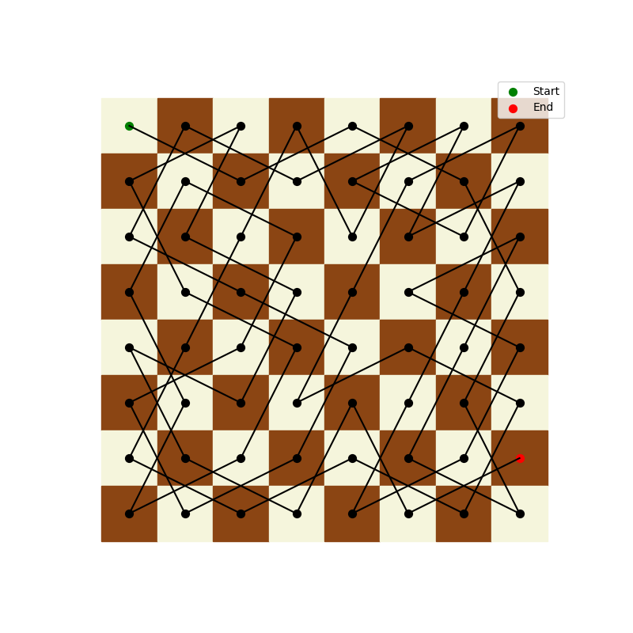

码头扩建
算法时间复杂度分析
推销员问题（TSP）
题目大意
推销员问题（Traveling Salesman Problem，TSP）是一个经典的组合优化问题。在该问题中，一个推销员需要访问一系列城市，每个城市只能访问一次，最后必须回到起始城市，目标是找到一条总路径长度最短的路线。从图论角度看，可将城市视为图的节点，城市之间的路径视为图的边，边的权重表示城市间的距离，问题等价于在完全图中寻找最小权重的哈密尔顿回路。
解法描述
朴素穷举+剪枝优化
算法思想
通过枚举所有可能的城市访问顺序，计算每种顺序下的路径总长度，从而找出最短路径。利用贪心法进行剪枝，在枚举过程中，如果当前路径长度已经大于已知的最小路径长度，停止对该路径后续情况的枚举。
实现方式
在 C++中，借助
next_permutation函数来枚举所有城市排列。对每个排列，依次计算相邻城市间的距离并累加，得到该排列对应的路径长度。在计算过程中，一旦路径长度超过当前记录的最小路径长度，直接放弃该排列的后续计算。复杂度分析
- 时间复杂度：朴素穷举的时间复杂度为\(O(n!)\)，因为需要枚举\(n\)个城市的所有排列。虽然剪枝优化在一定程度上减少了不必要的计算，但在最坏情况下，时间复杂度仍然是\(O(n!)\)。当城市数量\(n\)较大时，计算量会急剧增加，导致算法效率极低。
- 空间复杂度：主要取决于存储每个排列的空间，由于只需要存储一个城市排列序列，所以空间复杂度为\(O(n)\)。
1 |
|
动态规划法（Bellman - Held - Karp 算法）
算法思想
将原问题划分为多个子问题，通过求解子问题的最优解，逐步构建出原问题的最优解。把所有可能的路径用二进制序列表示，其中 1 表示对应城市已走过，0 表示未走过。利用状态转移方程，根据已走过城市的状态和当前所在城市，计算出走到下一个未走过城市的最小消耗。
实现方式
定义两个二维数组
dp和path，dp[i][j]表示当前走过的城市状态为i（二进制表示）且当前位于城市j时的最小消耗；path[i][j]记录走到城市j（状态为i时）的前一个城市。通过三层循环，外层循环遍历所有可能的城市状态（从 \(1\) 到 \(2^n - 1\)），中层循环在当前状态下遍历所有城市找到已走过的城市u，内层循环遍历所有城市找到未走过的城市v，更新dp数组和path数组。最后，通过遍历所有城市，找到从所有城市回到起始城市的最小路径长度，并根据path数组回溯出具体路径。复杂度分析
- 时间复杂度：算法中有三层循环，外层循环遍历\(2^n\)种城市状态，中层和内层循环分别遍历\(n\)个城市，所以时间复杂度为\(O(n^2\times2^n)\)。尽管它仍然是指数级复杂度，但相比朴素穷举的\(O(n!)\)，在实际计算中，由于利用了子问题的重叠性质，减少了重复计算，通常能在更短时间内找到最优解。
- 空间复杂度：主要由存储子问题最优解的二维数组
dp和path决定，它们的大小都是\((2^n)\times n\)，所以空间复杂度为\(O(n\times2^n)\)。当\(n\)较大时，可能会面临内存不足的问题。
1 |
|
骑士周游列国
题目大意
在国际象棋 8×8 的棋盘上，给定骑士的初始位置(\(m\),\(n\))（其中 \(0\leq m,n\leq 8\) ），要求找出一条路径，使骑士不重不漏地经过棋盘上的每一个格子。路径需用 8×8 的矩阵输出，矩阵中每个元素的值表示骑士到达该位置时行走的步数，起始位置步数为 1。
解法描述
深度优先遍历 DFS
算法思想
深度优先搜索是一种“试错”的搜索策略。从起始位置开始，按照骑士的移动规则，尝试所有可能的走法。若当前走法能继续推进（新位置未被访问过），则标记该位置并递归继续探索；若当前位置的所有走法都无法推进（新位置已被访问或越界），则回溯到上一个位置，尝试其他未探索的走法，直至遍历完整个棋盘或确定不存在可行路径。
实现方式
使用一个二维数组
g[N][N]表示棋盘，其中N = 8。数组元素值为 0 表示该位置未被访问，非 0 值表示骑士到达该位置的步数。定义方向数组dx[8]和dy[8]来表示骑士的 8 种移动方向。在dfs函数中，每次递归时检查当前位置的 8 个可能移动方向，若新位置合法且未被访问，则标记新位置并递归调用dfs继续探索，若递归返回true说明找到了可行路径，直接返回；若所有方向都尝试完仍未找到可行路径，则回溯（将新位置标记回 0）并返回false。在主函数中，读入起始位置，初始化起始位置的步数为 1，调用dfs函数进行搜索，若找到路径则输出棋盘矩阵，否则输出提示信息。复杂度分析
- 时间复杂度：在最坏情况下，每个位置都要尝试 8 种走法，对于 8×8 的棋盘，共有 64 个位置。随着搜索的深入，分支数量呈指数增长，所以时间复杂度约为 \(O(8^{64})\)，这是一个非常高的时间复杂度，意味着在大规模问题下，算法效率极低。
- 空间复杂度：空间复杂度主要取决于递归调用栈的深度。因为在最坏情况下需要遍历整个棋盘，而每次递归调用都会在栈中占用一定空间，递归深度最大为 64，所以空间复杂度为 \(O(N^{2})\)，即 \(O(64)\) 。
1 | /* |
启发式搜索 Warnsdorff 规则
算法思想
Warnsdorff 规则是一种启发式策略，其核心是在当前位置选择一阶落点时，优先考察各个一阶落点的可行二阶落点个数，选择可行二阶落点个数最少的一阶落点作为下一步移动方向。这样做的目的是优先选择那些周围“出路”较少的位置，使搜索更有针对性，减少不必要的回溯，提高搜索效率。
实现方式
在原 DFS 代码基础上进行修改。定义一个函数
get_weight来计算某个位置的可行二阶落点个数。在每次选择下一步移动位置时，将所有可行的一阶落点及其权重（可行二阶落点个数）存入一个向量v中，然后对向量v按权重从小到大排序。优先尝试权重小的落点进行递归搜索，若找到可行路径则返回，否则回溯继续尝试其他落点。复杂度分析
- 时间复杂度 在最坏情况下，检查每个位置的邻居时，需要考虑所有可能的移动位置，这里邻居个数 \(N = 8\)，时间复杂度为 \(O(N^{2})\)，即 \(O(8^{2}) = O(64)\)。但实际上，由于 Warnsdorff 规则的引导，搜索过程会优先选择更有可能成功的路径，大幅减少了搜索范围，基本可在线性时间内检测完棋盘上的所有点，相比朴素 DFS 的指数级复杂度有显著优化。
- 空间复杂度 空间复杂度与 DFS 类似，主要取决于递归深度或栈的大小。在最坏情况下，同样为 \(O(N^{2})\) （\(N\) 是棋盘边长），即 \(O(64)\)。不过，由于 Warnsdorff 规则的引导，搜索路径从八叉树退化为二叉树，使得递归深度降低。虽然这对空间复杂度的理论影响不大，但在实际运行中，对于只需求一个可行解的情况，实际空间利用效率更高，减少了不必要的空间占用。
1 | /* |
一种可能的周游路径如下： 
码头扩建问题
题目大意
某市有一码头，每次仅允许一艘船停泊装卸货。根据历史资料，码头平均每月停船 24 艘，每艘船的停泊时间为 24±20 小时，相邻两艘船的到达时间间隔为 30±15 小时。若一艘船因有其他船在港而等候 1 小时，其消耗成本为 1000 元。扩建码头大约需要 1350 万元。要求通过程序随机产生到达时间和停泊时间，模拟未来五年内船的停泊情况，多次模拟预测停泊情况，以判断未来五年内停泊船只因等候的成本消耗总和是否超过扩建码头花费，从而帮助市长做出是否扩建码头的决策。
解法描述
离散事件模拟算法
算法思想
利用离散事件模拟的方法，将未来五年的时间按月划分，通过循环模拟每个月内船只的到达和停泊过程。在模拟过程中，借助随机数生成符合条件的船只到达时间间隔和停泊时间，根据船只到达时码头的状态（是否有船正在停泊）来计算等待时间和成本，最后累加所有模拟次数的成本并求平均，与扩建码头的成本阈值进行比较，得出是否扩建的结论。
实现方式
在 C++中，使用
<random>库生成随机数。random_device rd用于生成随机数种子，mt19937 gen(rd())创建一个基于种子的随机数生成器。通过两层嵌套循环进行模拟，外层循环控制模拟的总次数（如 1000 次），内层循环模拟每个月（共 60 个月）的情况。对于每个月，假设第一艘船在最开始到达，生成其停泊时间。后续船只根据上一艘船的到达和停泊时间计算自身到达时间，若到达时上一艘船还在停靠，则计算等待成本，更新停泊时间；若无需等待，则直接更新停泊时间。每次模拟结束后累加总成本，最后根据总成本与扩建成本阈值的比较结果输出决策信息。复杂度分析
- 时间复杂度：外层循环执行次数为模拟总次数，设为
test，时间复杂度为 \(O(test)\)。内层循环执行 60 次，内层循环中的计算操作，如随机数生成、条件判断和成本计算等，都是常数时间操作，时间复杂度为 \(O(1)\)。所以总体时间复杂度为 \(O(test×1)\)，即 \(O(test)\) 。当模拟次数增加时，运行时间会线性增长。 - 空间复杂度：程序中主要使用了几个整型变量（如
spend、dock_time、arrival_time等）和一个长整型变量（cost）来存储数据，这些变量占用的存储空间是常数级别的。随机数生成器的存储空间与生成器的状态大小相关，但在本实验中，其状态大小也是常数级别的，不会对空间复杂度产生显著影响。因此，总体空间复杂度为 \(O(1)\) ，即无论模拟次数和数据规模如何变化，程序占用的空间基本保持不变。
- 时间复杂度：外层循环执行次数为模拟总次数，设为
1 |
|
算法时间复杂度的实验测试
题目大意
运用编程工具对堆排序或快速排序算法进行时间复杂度测试，通过在不同输入规模下运行算法并记录运行时间，从而学会通过实验分析算法的时间复杂度。
解法描述
堆排序算法
算法思想
基于二叉堆数据结构，以构建大根堆为例实现从小到大排序。首先将输入数组进行堆化操作，使每个节点都满足大根堆性质，即父节点的值大于等于子节点的值。然后不断将堆顶元素（最大值）与数组末尾元素交换，将最大值放到数组末尾，接着对交换后的堆进行调整，维持堆的性质，重复该过程直到整个数组有序。
实现方式
在 C++代码中，定义数组
heap[N]存储待排序数据，N为数组最大容量。down函数用于调整堆，在函数中，通过比较当前节点与其左右子节点的值，将最大值交换到当前节点位置，并递归向下调整。在main函数中，利用<random>库生成随机数填充数组。排序前使用clock()函数记录起始时间，排序过程先对数组进行堆化（从n/2到0调用down函数），然后通过不断交换堆顶和末尾元素并调整堆（共n次）实现排序。排序结束后再次使用clock()函数记录结束时间，计算并输出排序耗时。复杂度分析
- 时间复杂度：堆排序的时间复杂度为 \(O(n log n)\)。堆构建阶段，从
n/2到0调用down函数，每次调整操作的时间复杂度为 \(O(log n)\)，总共进行约 \(n/2\) 次，时间复杂度为 \(O(n log n)\) ；排序阶段，进行n次交换和调整堆操作，每次调整堆的时间复杂度也是 \(O(log n)\)，整体排序阶段时间复杂度同样为 \(O(n log n)\)。 - 空间复杂度：堆排序仅使用了常数级别的额外空间，如在调整堆过程中临时变量的存储，因此空间复杂度为 \(O(1)\)。
- 时间复杂度：堆排序的时间复杂度为 \(O(n log n)\)。堆构建阶段，从
1 |
|
快速排序算法
算法思想
采用分治策略。选择一个基准元素，将数组分为两个子数组，使得左边子数组的元素都小于基准元素，右边子数组的元素都大于基准元素。然后递归地对左右子数组进行排序，最后合并各个有序子数组得到最终的有序数组。
实现方式
代码中定义数组
q[N]存储数据。quick_sort函数实现快速排序逻辑，函数中先选取一个基准元素（这里取数组中间元素q[(l + r) >> 1]），通过双指针i和j从数组两端向中间扫描，将小于基准的元素放到左边，大于基准的元素放到右边。当i和j相遇时，完成一次划分，接着递归对左右子数组进行排序。在main函数中，同样利用<random>库生成随机数填充数组，记录排序前后的时间，计算并输出排序耗时。复杂度分析
- 时间复杂度：快速排序平均时间复杂度为 \(O(n log n)\)。在平均情况下，每次划分都能将数组大致均匀分成两部分，递归深度为 \(log n\)，每层划分操作的时间复杂度为 \(O(n)\)，整体时间复杂度为 \(O(n log n)\)。但在最坏情况下，如每次选取的基准元素都是数组中的最大或最小值，划分会极度不均匀，时间复杂度会退化为 \(O(n^2)\) 。
- 空间复杂度：快速排序的空间复杂度主要取决于递归调用的栈空间。平均情况下，递归深度为 \(log n\)，因此空间复杂度为 \(O(log n)\)；在最坏情况下，递归深度达到 \(n\)，空间复杂度为 \(O(n)\) 。
1 |
|